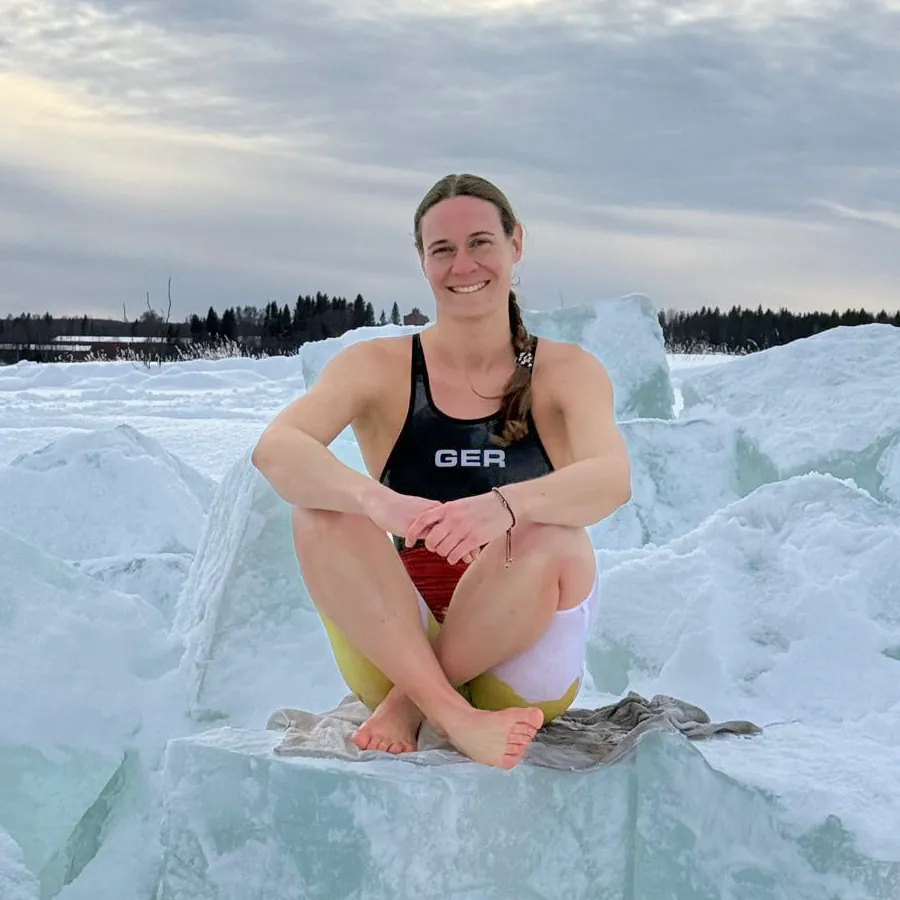

Über mich

Ich bin Franziska Partheymüller – Notfallsanitäterin, Heilpraktikerin, Schwimmtrainerin und Eisschwimmerin auf internationalem Niveau.
Seit über 10 Jahren arbeite ich mit Menschen im Wasser – vom ersten Kontakt bis hin zu Wettkampf und Erfahrungen unter Extrembedingungen. Als Weltmeisterin im Eisschwimmen und Teamkapitänin der deutschen Nationalmannschaft verbinde ich Technik, Erfahrung und mentale Stärke.
Mein Fokus: deine Entwicklung, saubere Bewegung und echte Kontrolle – im Wasser und im Eis.
Qualifikationen
- Zweifache Weltmeisterin im Eisschwimmen über 50 m Brust:
- Teamkapitänin der deutschen Nationalmannschaft im Eisschwimmen 2025/26
- Zertifizierte ICE-Instructorin
- Trainer-C-Lizenz
- Notfallsanitäterin und Heilpraktikerin
- Eisschwimmen seit 2015, Schwimmtraining seit über 10 Jahren